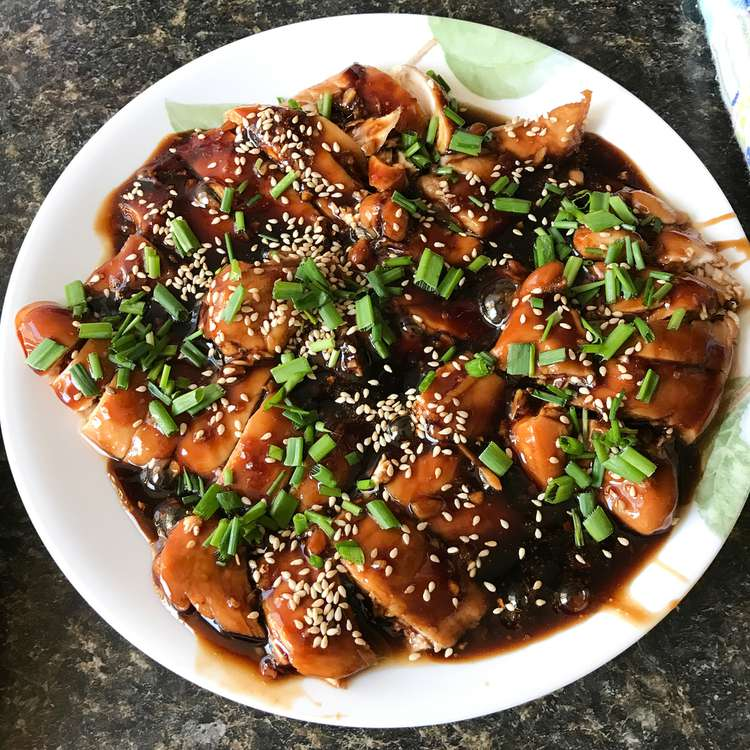

Oven Baked Chicken Teriyaki
Oven Baked Chicken Teriyaki

Description
Wonderful baked chicken with minimal mess to make for easy clean-up. My daughter says it's her favorite teriyaki chicken ever! Can be easily adapted to your tastes and can also be done on the stove if you prefer. Serve over rice.
Ingredients
- 2 tablespoon cornstarch
- 2 tablespoons water
- 1 cup low-sodium soy sauce
- 1/2 cup white sugar
- 1/4 cup mirin (Japanese sweet wine)
- 4 teaspoons grated fresh ginger
- 3 cloves garlic, minced
- 1/4 teaspoon red pepper flakes
- 4 skinless, boneless chicken breast halves
Home